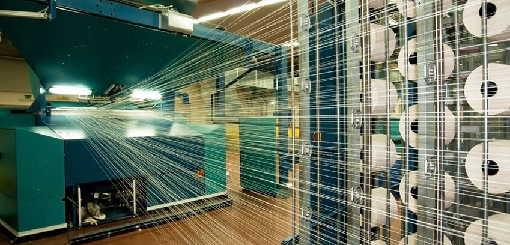

Proyectos y acciones implementadas
La industria textil es una de las más contaminantes del mundo, por lo que queremos presentar proyectos y acciones enfocadas a reducir su impacto ambiental en el mundo, con proyectos de producción responsable, reutilización de materiales y promoción de economía circular, para generar un cambio real hacia una moda más sostenible.
Alternativas utilizadas por las empresas del estudio de caso.
DryDye de Adidas
Adidas apuesta por la innovación con su tecnología DryDye, un proceso de teñido que utiliza CO₂ presurizado en lugar de agua. Esta técnica elimina el uso de grandes volúmenes de agua y reduce la descarga de químicos, contribuyendo a conservar los recursos hídricos y a disminuir la contaminación en la industria textil.
Urban Outfitters & FABSCRAP
Desde 2019 Urban Outfitters trabajan juntos para reciclar residuos textiles de su cadena de suministro. Asimismo, tiene una linea Vintage & Remade con ropa rearmada y telas sobrantes, extendiendo su vida útil. Además, sus cambios en el uso de fibras más sostenibles han llevado a una reducción del 65% en su huella hídrica y del 6% en su huella de carbono.
Zara - Inditex
Zara se comprometió a usar 100 % telas sostenibles (algodón, lino, poliéster reciclado) para 2025. Dentro de esto, esta su colección Join Life que incluye prendas hechas con algodón orgánico, poliéster reciclado, y materials como viscosa sostenible. Además, su plataforma Zara Pre-Owned permite la reventa, reparación y donación de prendas usadas.
Alternativas tomadas por otras empresas
Ganni firma un acuerdo de cuatro años con una recicladora de poliéster
La marca danesa Ganni ha dado un paso firme hacia la sostenibilidad al firmar un acuerdo de largo plazo con Ambercycle para incorporar Cycora, un innovador poliéster reciclado producido a partir de desechos textiles posconsumo. Con esta alianza, Ganni apuesta por reducir la dependencia de materiales vírgenes, disminuir su huella de carbono y demostrar que la moda circular es posible a gran escala.
Circulosa de H&M
Con el proyecto Circulose, H&M se convierte en pionera en el uso de fibras recicladas elaboradas a partir de residuos textiles como jeans y camisetas. Este material, desarrollado por la empresa sueca Renewcell, marca un paso clave hacia la circularidad, permitiendo que prendas nuevas nazcan de textiles desechados. La compañía se ha propuesto que, para 2030, todos sus productos estén hechos con materiales reciclados o sostenibles, y para 2040 sean climáticamente positivos de principio a fin.
Otras alternativas con tratamiento de agua residual de la industria textil en 2025
El tratamiento sostenible de aguas residuales en la industria textil es crucial debido al alto volumen de agua utilizado y a los productos químicos tóxicos presentes en los procesos de teñido y acabado.
- Tratamientos biológicos avanzados que usan microorganismos para degradar contaminantes orgánicos; reducen olores y carga contaminante biodegradable.
- Filtros de membrana (ultrafiltración, nanofiltración y ósmosis inversa) para remover sólidos suspendidos, colorantes y metales pesados.
- Tecnología de oxidación avanzada, como ozono, peróxido de hidrógeno o procesos Fenton, para destruir compuestos tóxicos persistentes.
- Captura y reutilización de efluentes tratados, cerrando el ciclo del agua dentro de la planta productora textil.
- Plantas de tratamiento híbridas, que combinan tecnologías físicas, químicas y biológicas para lograr mayor eficiencia global.
- Monitoreo continuo con sensores y automatización para controlar parámetros clave (pH, turbidez, carga contaminante) y optimizar el uso de reactivos.
- Aplicaciones de tecnologías limpias emergentes que minimizan generación de lodos, residuos secundarios y emisiones de gases nocivos.
